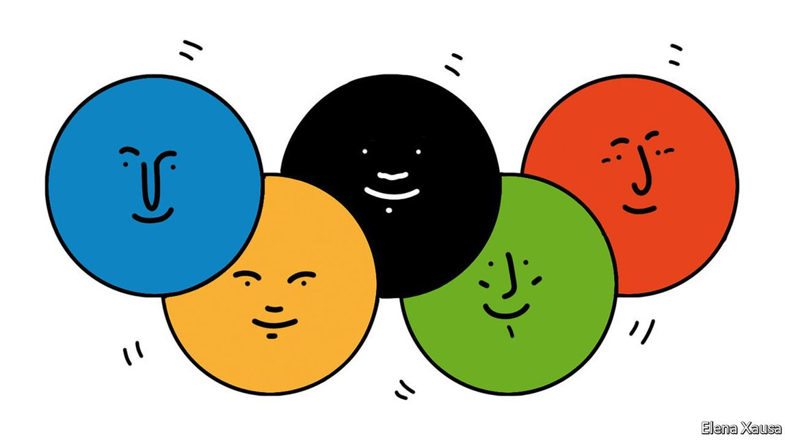

Text
2021-07-29T18:09:38+00:00
The changing face of Japan
日本新面孔
日本新面孔
Mixed-race athletes reflect broader developments in Japanese society
混血运动员反映出日本社会更广泛的发展
混血運動員反映出日本社會更廣泛的發展
Their country’s diversity is becoming harder to ignore
日本的种族多元化越发难以忽视
日本的種族多元化越發難以忽視
AS THE SON of a Japanese mother and Beninese father, Hachimura Rui stood out from his classmates in Toyama, a small town some six hours’ drive from Tokyo. Other children taunted him, he once recalled to The Undefeated, a sports website: “You’re black, go away.” But his talent on the basketball court helped him gain respect. Now a star in America’s NBA, Mr Hachimura carried the flag for Team Japan when the Olympics opened on July 23rd.
八村塁的母亲是日本人，父亲是非洲贝宁人，小时候生活在距离东京约六小时车程的小城富山，在班上总显得很另类。其他孩子嘲弄他说，“你是黑人，走开”——他在某次接受体育网站The Undefeated访问时回忆道。但他在篮球场上的天赋帮他赢得了尊重。现在他已是美国NBA明星球员，在7月23日的东京奥运会开幕式上担任日本代表团旗手。
八村塁的母親是日本人，父親是非洲貝寧人，小時候生活在距離東京約六小時車程的小城富山，在班上總顯得很另類。其他孩子嘲弄他說，“你是黑人，走開”——他在某次接受體育網站The Undefeated訪問時回憶道。但他在籃球場上的天賦幫他贏得了尊重。現在他已是美國NBA明星球員，在7月23日的東京奧運會開幕式上擔任日本代表團旗手。
Mr Hachimura’s selection as a flag-bearer reflects how attitudes about race and identity are in flux in a country where the idea of racial homogeneity has long held sway. He belongs to a cohort of prominent mixed-race athletes who are forcing Japan to reckon with its diversity—from the Haitian-Japanese tennis champion Osaka Naomi to the Ghanaian-Japanese sprinter Sani Brown Abdul Hakim and the Iranian-Japanese baseball star, Darvish Yu. “They are becoming the role models that they themselves didn’t have,” says Miyazaki Tetsuro, a Belgian-Japanese photographer who documents other hafu (half), as mixed-race people in Japan are often called.
八村塁被选为旗手，反映出在单一种族观念一直占主导的日本，人们对种族和身份认同的态度正在发生变化。一批像他这样的杰出的混血运动员（包括海地日本混血网球冠军大坂直美、加纳日本混血短跑好手萨尼·布朗·阿卜杜尔·哈基姆、伊朗日本混血棒球明星达比修有）正让日本不得不正视种族多元化。“他们成了他们自己不曾有过的榜样人物。”比利时日本混血摄影师宫崎哲郎说。他拍摄记录了其他“hafu”（即英语的“half”，日本人往往这么称呼混血儿）的生活。
八村塁被選為旗手，反映出在單一種族觀念一直佔主導的日本，人們對種族和身份認同的態度正在發生變化。一批像他這樣的傑出的混血運動員（包括海地日本混血網球冠軍大坂直美、加納日本混血短跑好手薩尼·布朗·阿卜杜爾·哈基姆、伊朗日本混血棒球明星達比修有）正讓日本不得不正視種族多元化。“他們成了他們自己不曾有過的榜樣人物。”比利時日本混血攝影師宮崎哲郎說。他拍攝記錄了其他“hafu”（即英語的“half”，日本人往往這麼稱呼混血兒）的生活。
The notion that Japan is a racially homogeneous nation has always been a myth. The Japanese originated from many parts of Asia; Japan is home to Ainu, Okinawans (both hailing from islands that were once distinct from Japan) and Koreans, among others. Japan’s empire was a multi-ethnic society (albeit one where ethnic Japanese topped the hierarchy). But the myth of homogeneity found eager acolytes, both among Japanese seeking a post-imperial identity and among outsiders seeking explanations for Japan’s economic miracle. An entire genre of literature emerged around it: Nihonjinron, theories about the Japanese. Such ideas “excised the multicultural past and elided the existence of minority populations,” argues Michael Weiner, the editor of “Japan’s Minorities: The Illusion of Homogeneity”. Conservatives cling to them to this day.
日本是单一种族国家的观念从来都是错误的。“日本人”实际上源自亚洲各地：日本是阿伊努人、琉球人（两者都来自曾与日本迥然不同的岛屿）、朝鲜人等族群的家园。曾经的日本帝国是一个多民族社会（尽管大和民族在其中地位最高）。但单一种族的迷思不乏狂热信徒，其中既有在后帝国时代寻求身份认同的日本人，也有试图解释日本经济奇迹的外人。围绕这个主题产生了一整个文献类型：日本人论（Nihonjinron，探讨日本人的理论）。这种观点“抹去了日本多元文化的历史，隐去了少数族裔的存在”，《日本少数族裔：民族同质性的错觉》（Japan’s Minorities: The Illusion of Homogeneity）一书的编辑迈克尔·韦纳（Michael Weiner）认为。但保守派至今仍坚持这些观念。
日本是單一種族國家的觀念從來都是錯誤的。“日本人”實際上源自亞洲各地：日本是阿伊努人、琉球人（兩者都來自曾與日本迥然不同的島嶼）、朝鮮人等族群的家園。曾經的日本帝國是一個多民族社會（儘管大和民族在其中地位最高）。但單一種族的迷思不乏狂熱信徒，其中既有在後帝國時代尋求身份認同的日本人，也有試圖解釋日本經濟奇蹟的外人。圍繞這個主題產生了一整個文獻類型：日本人論（Nihonjinron，探討日本人的理論）。這種觀點“抹去了日本多元文化的歷史，隱去了少數族裔的存在”，《日本少數族裔：民族同質性的錯覺》（Japan’s Minorities: The Illusion of Homogeneity）一書的編輯邁克爾·韋納（Michael Weiner）認為。但保守派至今仍堅持這些觀念。
The story of one pure people leaves little room for hafu. To be considered truly Japanese tends to mean having two Japanese parents, speaking Japanese fluently, and “acting Japanese”. “Most of us have this constant feeling of not being Japanese enough,” says Mr Miyazaki. Hafu are often perceived as foreigners, despite holding Japanese passports. Ms Osaka’s grandfather disowned her mother when she first revealed she was seeing a foreign man.
单一民族的叙事留给hafu们的篇幅很少。要被视为纯正的日本人，往往意味着父母都要是日本人，能说一口流利日语，而且“举止要像日本人”。“我们中大部分人总觉得自己不够像日本人。”宫崎哲郎说。尽管持有日本护照，但混血儿还是经常被视为外国人。大坂直美的外祖父当年一听到女儿说交的男朋友是外国人，就跟她断绝了父女关系。
單一民族的敘事留給hafu們的篇幅很少。要被視為純正的日本人，往往意味着父母都要是日本人，能說一口流利日語，而且“舉止要像日本人”。“我們中大部分人總覺得自己不夠像日本人。”宮崎哲郎說。儘管持有日本護照，但混血兒還是經常被視為外國人。大坂直美的外祖父當年一聽到女兒說交的男朋友是外國人，就跟她斷絕了父女關係。
To this day, racism remains a big problem. That is why the celebration of champion athletes can smack of hypocrisy. Mr Hachimura has said he receives hateful messages on social media “almost every day”. Nissin, a noodle-maker, lightened Ms Osaka’s skin and hair in a commercial. (After a backlash, the company took down the ad.) Some on the right still question whether the two are truly Japanese. The situation is even tougher for those without powerful forehands or smooth jump shots. Mixed-race children face brutal bullying; some schools still have rules requiring students to dye or straighten their hair if it does not conform to the straight, black Japanese norm. Discrimination on the basis of race in hiring and housing is widespread. Japanese law lacks the teeth to prevent it, laments Shimoji Lawrence Yoshitaka, a sociologist who studies hafu. Minorities have few representatives in Japanese politics.
时至今日，种族歧视依然很严重。这就是为什么人们可能会觉得日本对冠军混血运动员的赞颂透着一丝虚伪。八村塁说他“几乎每天”都会在社交媒体上收到仇恨信息。面条厂家日清在一则广告中“漂白”了大阪直美动漫形象的肤色和发色（引发争议后，日清撤下了广告。）一些右翼人士仍质疑这两位运动员是否算真正的日本人。对于那些没有强力正手球或行云流水的跳投技术傍身的人来说，处境更是艰难。混血孩子面对残忍的欺凌；一些学校仍然规定，头发不符合日本黑直发标准的学生必须做染黑拉直。招聘和住房方面的种族歧视很普遍。研究日本混血儿群体的社会学家下地·劳伦斯·吉孝哀叹，日本法律在防止种族歧视方面没有真实效力。少数族裔在日本政坛少有代表。
時至今日，種族歧視依然很嚴重。這就是為什麼人們可能會覺得日本對冠軍混血運動員的讚頌透着一絲虛偽。八村塁說他“幾乎每天”都會在社交媒體上收到仇恨信息。麵條廠家日清在一則廣告中“漂白”了大阪直美動漫形象的膚色和發色（引發爭議後，日清撤下了廣告。）一些右翼人士仍質疑這兩位運動員是否算真正的日本人。對於那些沒有強力正手球或行雲流水的跳投技術傍身的人來說，處境更是艱難。混血孩子面對殘忍的欺凌；一些學校仍然規定，頭髮不符合日本黑直發標準的學生必須做染黑拉直。招聘和住房方面的種族歧視很普遍。研究日本混血兒群體的社會學家下地·勞倫斯·吉孝哀嘆，日本法律在防止種族歧視方面沒有真實效力。少數族裔在日本政壇少有代表。
Yet Japan’s more diverse reality is harder to ignore, not least because of stars like Mr Hachimura. It helps that the new generation of athletes is not shy about airing its experiences. “Hearing such voices talking openly about discrimination makes people realise they aren’t alone,” says Mr Shimoji.
但日本社会正日益变得多元化，这种现实越来越难以忽视，尤其是因为有八村塁这样的明星人物。新一代运动员不羞于讲述自己的经历，也有助于改善现状。“听到这些名人公开谈论歧视问题，会让人知道自己并不孤单。”下地·劳伦斯·吉孝说。
但日本社會正日益變得多元化，這種現實越來越難以忽視，尤其是因為有八村塁這樣的明星人物。新一代運動員不羞於講述自己的經歷，也有助於改善現狀。“聽到這些名人公開談論歧視問題，會讓人知道自己並不孤單。”下地·勞倫斯·吉孝說。
There are also more foreigners in Japan than at any time in its post-war history. A stealth immigration campaign to make up for Japan's shrinking population has seen the numbers of foreigners living there grow from some 2m a decade ago to nearly 3m today. That amounts to just 2% of the overall population, but the share is much higher among city-dwellers and the young: at least 10% of 20-somethings in Tokyo are foreign-born. (Japan does not collect statistics on the ethnic background of its citizens, only their nationality.)
另外，在日本的外国人数量也达到战后的新高。为弥补日本的人口萎缩，一场移民运动悄然展开，使生活在那里的外国人数量从十年前的约200万上升至现在的近300万。这只占到日本总人口的2%，但在城市居民和年轻人中的比例要高得多：东京20来岁的年轻人中至少有10%是在外国出生的。(日本只收集公民的国籍统计数据，不收集他们的族裔背景数据）。
另外，在日本的外國人數量也達到戰後的新高。為彌補日本的人口萎縮，一場移民運動悄然展開，使生活在那裡的外國人數量從十年前的約200萬上升至現在的近300萬。這隻佔到日本總人口的2%，但在城市居民和年輕人中的比例要高得多：東京20來歲的年輕人中至少有10%是在外國出生的。(日本只收集公民的國籍統計數據，不收集他們的族裔背景數據）。
The stigma around marrying foreigners is fading: in 1993, 30% of Japanese approved of international marriages, while 34% disapproved; by 2013, the last year for which data are available, 56% approved and 20% did not. One in every 50 babies is now born to a mixed couple, up from one in every 135 in the late 1980s. As Mr Hachimura and his peers show, their potential is enormous.
与外国人通婚渐渐不再是丢脸的事：在1993年，30%的日本人赞成国际婚姻，34%不赞成；到2013年（有相关数据的最近一年），56%赞成，20%不赞成。1980年代末，日本每135个婴儿中有一个混血儿，现在是每50个婴儿中有一个。正如八村塁和他的混血伙伴们所展示的，他们的潜力是巨大的。
與外國人通婚漸漸不再是丟臉的事：在1993年，30%的日本人贊成國際婚姻，34%不贊成；到2013年（有相關數據的最近一年），56%贊成，20%不贊成。1980年代末，日本每135個嬰兒中有一個混血兒，現在是每50個嬰兒中有一個。正如八村塁和他的混血夥伴們所展示的，他們的潛力是巨大的。